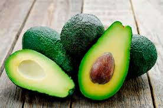

Lista dos 10 maiores municipios do Estado do Paraná
- Curitiba
- Londrina
- Maringá
- Ponta Grossa
- Cascavel
- São José dos Pinhais
- Foz do Iguaçu
- Colombo
- Guarapuava
- Paranaguá
Principais Vitaminas que o Ser Humans precisa
- Vitamina A
- Vitaminas do Complexo B
- Vitamina C
- Vitamina D
- Vitamina E
- Vitamina K
- Cálcio
- Ferro
- Iodo
- Zinco
Frutas



Tabela
| Vitaminas | Fontes |
| A (retinol) | Hortaliças de coloração verde-escuro; vegetais de coloração alaranjada; leite e derivados; e fígado. |
| D (calciferol) | Leite e derivados; salmão; e gemas de ovo. |
| E (tocoferol) | Óleos vegetais; nozes; e sementes. |
| K (filoquinona) | Hortaliças verdes; também é produzida por bactérias presentes no intestino. |
| B1 (tiamina) | Carne de porco; legumes; vegetais folhosos; e grãos integrais. |
| B2 (riboflavina) | Carnes; grãos integrais; hortaliças; leite e derivados. |